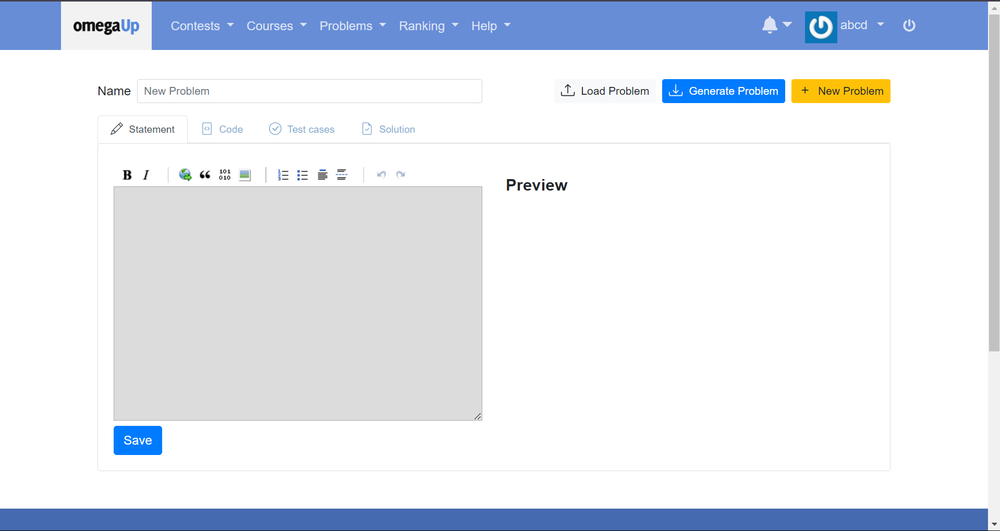

Google Summer of Code '24: Migration of CDP
Hey everyone, I'm Aritra, a junior pursuing an M.Sc. degree in
Computer Science at CMI. This summer, I am working on migrating the
unofficial CDP
to the official site of OmegaUp (here) as a part of GSoC 2024.
Before reading the blog, you might want to go through the
first blog of GSoC '24. also
participated in GSoC '23 with Mathesar, you can find the related
blogs here.
In this blog, I will share
about the project and our (Carlos,
Juanpa
and I) progress on the project.
A little bit about Myself:
I love Mathematics and Algorithms. This semester, I will be
exploring Cryptography and Advanced Machine Learning. If you want to
know me better, you might want to visit my
LinkedIn profile,
GitHub profile
or go through my portfolio. There you
will find numerous ways to get in touch with me. I will write more
blogs on GSoC '24, you can find them
here.
You may click on the images to visit the issues/pages. Let's dive
into the project details.

What is the CDP:
CDP stands for Creador de Problemas in Spanish which
translates to Problem Creator. This interactive component
aims to reduce the complexity to create a problem for OmegaUp
platform. Previously,
Mau
implemented the
unofficial CDP
to help users create a problem. He also started the
project
to make it a part of official omegaUp site.
Now, if we want to write a problem, we typically need to
create zip file following
this
with some required folders that contains the problem markdown,
solution markdown and the test cases. The CDP will abstract the zip
file creation and just require you to write the markdowns and the
test cases.
What I have learnt:
Over the past two months, I've learned a lot thanks to the collaborative community I'm part of. Most of my work is focused on frontend for now. Implementing the CDP, it required me to study the codebase in depth, along with the previous PRs of Mau. Additionally, I'm becoming more proficient with Bootstrap Vue and Vue test utils. You will find all of my merged PRs here.
Towards the second phase:
Thanks to Carlos and Juanpa for their excellent guidance throughout. The CDP page still needs a lot of improvement before it can be officially deployed. The pending tasks are:
- To add layout sidebar.
- To complete the working of download and upload the zip file.
- to write e2e cypress tests.
Soon, I will write the next blog when the CDP would be
fully-functional. Goodbye till then!
(If you are curious, the character in the background is
Kurapika from Hunter x Hunter, and the quote was by
Silco to Jinx in Arcane)